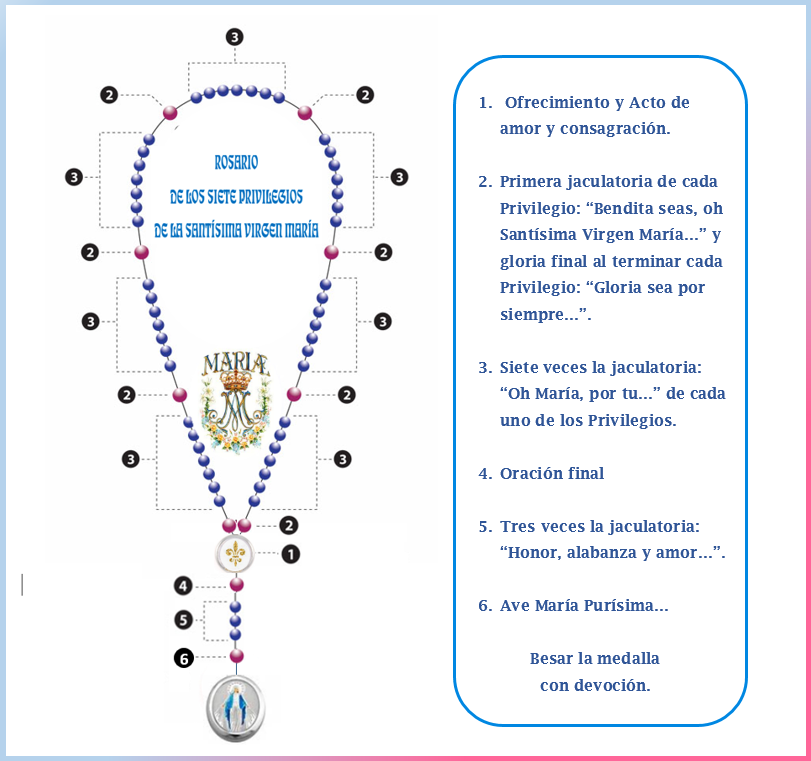
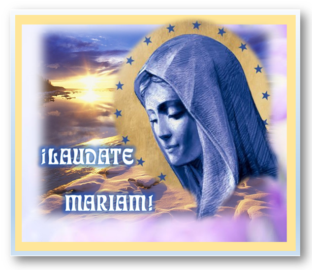

Qué es el Rosario 7P
Rosario de los Siete Privilegios de la Santísima Virgen María
Introducción
El Concilio Vaticano II enseña que las diversas formas de piedad hacia la Madre de Dios han de tender a honrar a nuestra Madre y a conseguir su intercesión poderosa. La verdadera devoción a Santa María necesita de una fe viva, que lleve al amor y se traduzca en imitación.
El Rosario de los Siete Privilegios de la Santísima Virgen María es un rezo de alabanza a nuestra Madre por las grandezas que Dios obró en Ella y por las cuales fue bendita y distinguida entre todas las mujeres; y a la vez un acto de reparación por el desamor y desprecio de que muchos la hacen objeto.
Cuatro de estos siete Privilegios están proclamados como dogmas por la Iglesia, es decir, verdades de fe fundamentadas en la Palabra de Dios. Es un acto de amor dar a conocer las maravillas realizadas por Dios en María Santísima, para que cada día sea más conocida y amada por todos sus hijos.
Obra de Amor, como promotora de esta devoción, se compromete a tener a diario en sus oraciones a las personas que hagan el compromiso de rezar cada sábado este rosario de alabanza a María (compromiso anual). Estas personas forman parte de nuestra familia espiritual llamada Grupo Laudate Mariam.
Cómo rezarlo
El rosario consta de siete grupos de siete cuentas cada uno, que corresponden a cada uno de los Privilegios, y entre estos siete grupos una cuenta intermedia. En el tramo final del rosario hay otras cinco cuentas y finalmente una medalla de la Santísima Virgen.
Cada uno de los privilegios consta de tres pequeñas invocaciones con sus respectivas respuestas:
- Primera invocación: (Cuenta intermedia) Se dice una sola vez y expone la esencia del Privilegio.
- Segunda invocación: Contiene una petición filial a nuestra Madre, que se repite 7 veces en el grupo de cuentas.
- Tercera invocación: Alabanza a la Trinidad por enriquecerla con este Privilegio (corresponde a la siguiente cuenta intermedia).
Al final, las cinco cuentas corresponden a la Oración final, la jaculatoria “Honor, alabanza y amor a Santa María” (repetida 3 veces) y la jaculatoria final “Ave María purísima”.

